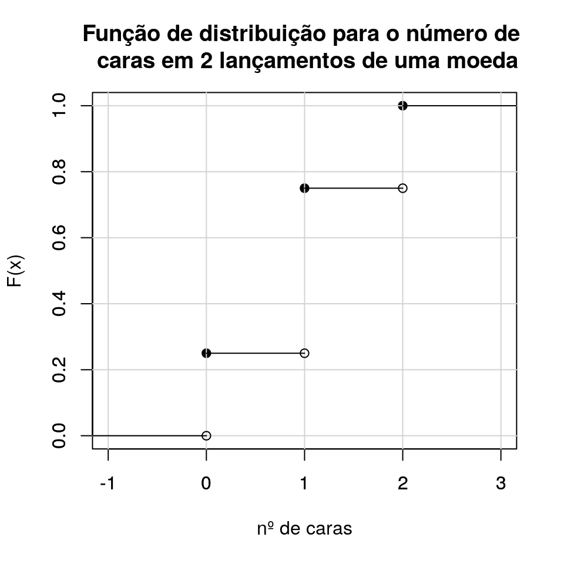
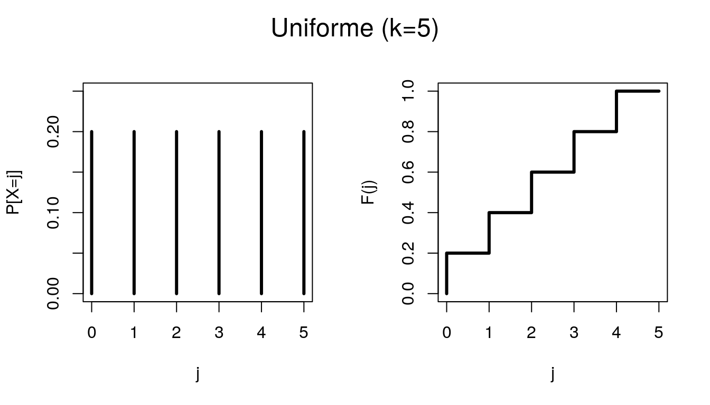
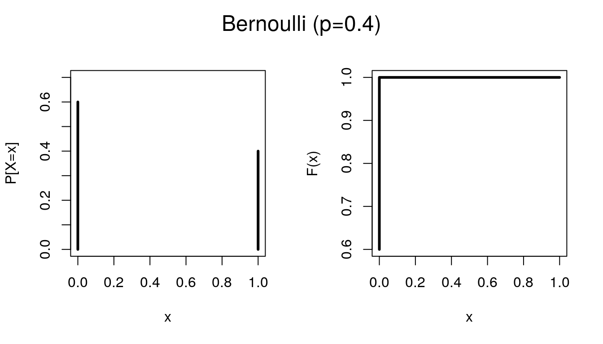
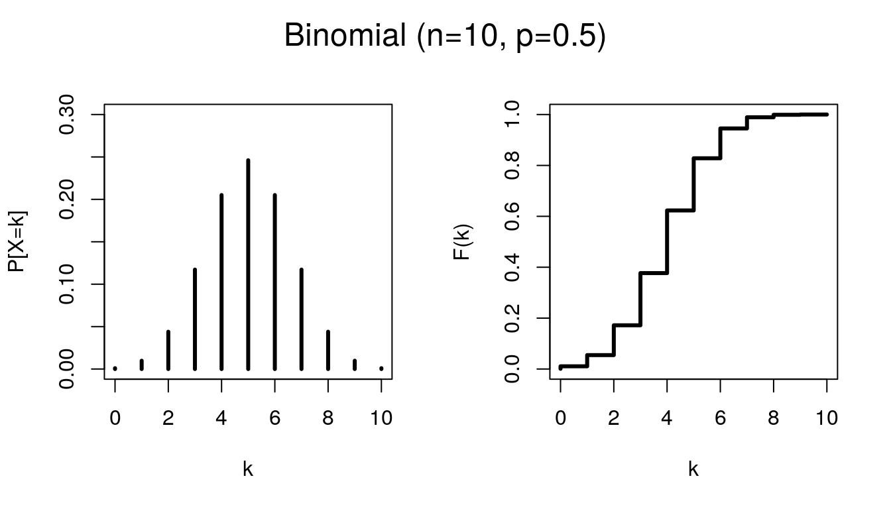
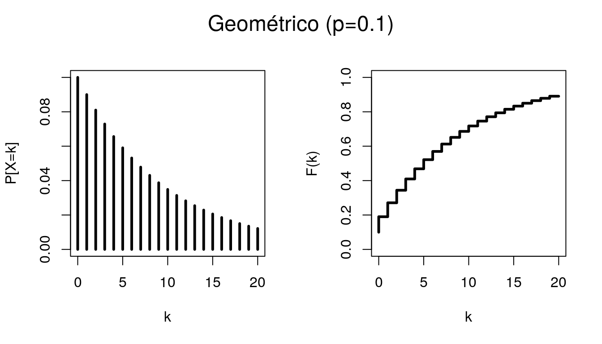
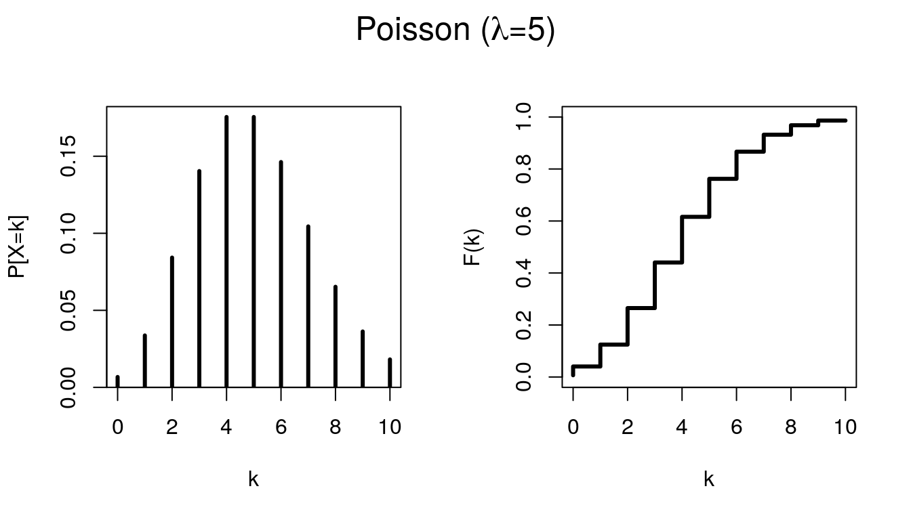
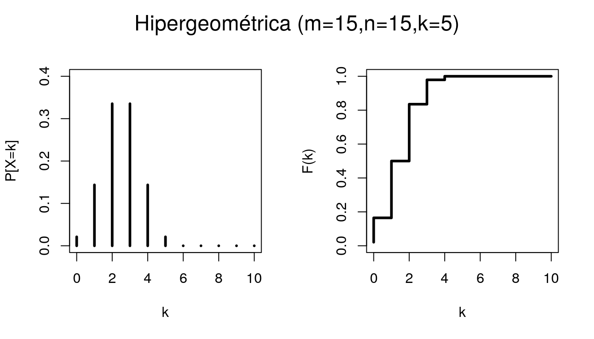

Noções de Probabilidade e Estatística
Parte 4 - Variáveis aleatórias discretas
Lineu Alberto Cavazani de Freitas
1 Variáveis aleatórias discretas
Uma variável aleatória é classificada como discreta se assume um conjunto de valores enumerável. Dessa forma, é possível atribuir probabilidades para um ponto específico.
2 Função de probabilidade
Seja uma variável aleatória (v.a) discreta \(X\), que assume os valores \(x_{1}, x_{2}, ... , x_{n}, ...\). Sua função de probabilidade (fp) é a função que atribui probabilidades a cada \(x_{i}\) em que:
\(0 \leq P(x_{i}) \leq 1\), \(i = 1, 2, ...\)
\(\sum_{i} P(x_{i}) = 1\)
As possíveis notações são:
- \(P(X=x_i)=p(x_i)=p_i, \ i=1,2,...\)
As variáveis aleatórias são completamente caracterizadas pela sua função de probabilidade e é importante obter a função que melhor represente o comportamento da variável na população.
Considere o experimento de lançar uma moeda duas vezes consecutivas e observar obervar o resultado, temos interesse em verificar o número de caras, chamaremos de variável aleatória N. O espaço amostral é dado pelas combinações:
- se {cara;cara}, então 2 caras.
- se {cara;coroa}, então 1 cara.
- se {coroa;cara}, então 1 cara.
- se {coroa;coroa}, então 0 cara.
Logo, a função de probabilidade para a variável aleatória N (número de caras em 2 lançamentos) é dada por:
3 Função de distribuição acumulada de probabilidade
Em certas situações pode ser útil calcularmos a probabilidade acumulada até um certo valor. A função de distribuição ou função acumulada de probablidade de uma v.a \(X\) é dada por:
\[F(x) = P(X \leq x)\]
Considerando o exemplo em que a variável aleatória n representa o número de caras observadas em 2 lançamentos, a função acumulada de probailidade fica dada por:
\[F= \left\{\begin{matrix} 0 & se \ n<0\\ 1/4 & se \ n=0\\ 3/4 & se \ n=1\\ 1 & se \ n \geq 2 \end{matrix}\right.\]
A função de distribuição acumulada também pode ser convenientemente representada através de um gráfico que tem forma de escada:

4 Medidas de posição para V.A’s discretas
Sabemos que a descrição completa do comportamento de uma variável aleatória discreta é feita através da sua função de probabilidade, desta forma presume-se que qualquer quantidade destinada a resumir os valores observados da variável devem envolver esta função.
Para definição das medidas de posição central para variáveis aleatórias discretas, suponha que os possíveis valores da variável aleatória sejam representados por \(x_1,x_2,...,x_k\) com correspondentes probabilidades \(p_1,p_2,...,p_k\).
4.1 Média
Também chamada de valor esperado e esperança, representa o ponto de equilíbrio da distribuição dos valores da variável aelatória. A média para uma variável \(X\) é dada por:
\[E(X)=\sum_{i=1}^{k}x_ip_i\]
Notações alternativas para \(E(X)\) são: \(\mu_X\) ou simplesmente \(\mu\)
4.2 Mediana
A mediana é o valor \(Md\) que satisfaz às seguintes condições
\[P(X \geq Md) \geq 1/2 \ e \ P(X \leq Md) \leq 1/2\]
4.3 Moda
A moda (\(Mo\)) é o valor (ou valores) da variável com maior probabilidade de ocorrência
\[Mo = max(p_1,p_2,...,p_k)\]
5 Medidas de dispersão para V.A’s
Para variáveis aleatórias, a medida de dispersão mais utilizada é a variância.
Seja \(X\) uma variável aleatória com \(P(X_i=x_i)=p_i, \ i=1,2,...,k\) e média \(\mu\). A variância de \(X\) é a ponderação pelas respectivas probabilidades, dos desvios relativos à média, elevados ao quadrado, isto é
\[Var(X)=\sum_{i=1}^{k} (x_i-\mu)^2p_i\]
Notações alternativas para \(Var(X)\) são \(\sigma^2\), ou ainda \(\sigma_X^2\). Extraindo a raiz quadrada desta quantidade, obtém-se o desvio padrão (\(Dp(X)\), \(\sigma\) ou \(\sigma_X\)).
A variância definida anteriormente pode ainda ser considerada como valor esperadode uma nova variável aleatória, o desvio ao quadrado. Isto é:
\[Var(X)= E[(X-\mu)^2]\]
ou ainda
\[Var(X)= E(X^2)-\mu^2= \sum_{i=1}^{k} p_i x_i^2-\mu^2.\]
6 Principais modelos discretos
Algumas variáveis aleatórias aparecem com bastante frequência em situações práticas. Nesses casos, a função de probabilidade pode ser escrita de maneira mais compacta, isto é, existe uma lei para atribuir as probabilidades.
As mais famosas e conhecidas funções discretas de probabilidade são:
- Uniforme
- Bernoulli
- Binomial
- Geométrico
- Poisson
- Hipergeométrico
6.1 Uniforme
Seja \(X\) uma variável aleatória que assume os valores \(1,2,...,k\). Dizemos que \(X\) segue o modelo Uniforme Discreto se atribui a mesma probabilidade (\(1/k\)) a cada um dessses \(k\) valores. A função de probabilidade é dada por:
\[P(X=j) = \frac{1}{k}, \ j=1,2,...,k.\]
Para indicar que a variável aleatória X segue o modelo Uniforme Discreto usa-se a notação \(X \sim U_D[1,k]\). Além disso, \(E(X) = \frac{1+k}{2}\) e \(Var(X) = \frac{k^2 - 1}{12}\).

6.2 Bernoulli
Dizemos que a variável \(X\) segue o modelo de Bernoulli se atribui 0 ou 1 à ocorrência de fracasso ou sucesso. Seja \(p\) a probabilidade de sucesso, \(0 \leq p \leq 1\), a função de probabilidade é dada por:
\[P(X=x) = p^x(1-p)^{1-x}, \ x=0,1.\]
Para indicar que a variável aleatória X segue o modelo Bernoulli usa-se a notação \(X \sim b(p)\). Além disso, \(E(X) = p\) e \(Var(X) = p(1-p)\).

6.3 Binomial
A repetição de ensaios de Bernoulli independentes dá origem à um importante modelo discreto: o modelo Binomial. Sendo assim cosidere a repetição de \(n\) ensaios de Bernoulli independentes e todos com a mesma probabilidade de sucesso \(p\). A variável que conta o número de sucessos é denominada Binomial com parâmetros \(n\) e \(p\) e sua função de probabilidade é dada por:
\[P(X=k) = \binom{n}{k} p^k (1-p)^{n-k}, \ k=0,1,2,...,n.\]
Além disso, \(E(X) = np\) e \(Var(X) = np(1-p)\).

6.4 Geométrico
Dizemos que uma variável aleatória \(X\) tem distribuição Geométrica de parâmetro \(p\), se sua função de probabilidade tem a forma:
\[P(X=k) = p(1-p)^k, \ 0 \leq p \leq 1 \ e \ k=0,1,2,... \]
Usa-se a notação \(X \sim G(p)\). Interpretando \(p\) como a probabilidade de sucesso, a distribuição Geométrica pode ser pensada como o número de ensaios de Bernoulli que precedem o primeiro sucesso. Além disso, \(E(X) = \frac{1-p}{p}\) e \(Var(X) = \frac{1-p}{p^2}\).

6.5 Poisson
Uma variável aleatória \(X\) tem distribuição de Poisson com parâmetro \(\lambda>0\), se sua função de probabilidade é dada por:
\[P(X=k) = \frac{e^{-\lambda} \lambda^k}{k!}, \ k = 0,1,2,...\]
O parâmetro \(\lambda\) usualmente refere-se à taxa de ocorrência, isto é, a frequência média ou esperada num determinado intervalo. Usa-se a notação \(X \sim Po(\lambda)\). Além disso, \(E(X) = Var(X) = \lambda\).

6.6 Hipergeométrico
Considere um conjunto de \(n\) objetos dos quais \(m\) são do tipo I e \(n-m\) são do tipo II. Para um sorteio de \(r\) objetos \((r<n)\), feito ao acaso e sem reposição. Defina \(X\) como o número de objetos do tipo I selecionados. Diremos que a variável aleatória X segue o modelo Hipergeométrico e sua função de probabilidade é dada pela expressão:
\[P(X=k) = \frac{\binom{m}{k} \binom{n-m}{r-k}}{\binom{n}{r}}, k=max(0,r-(n-m)),...,min(r,m)\]
Além disso, \(E(X) = \frac{rm}{n}\) e \(Var(X) = \frac{rm(n-m)(n-r)}{n^2(n-1)}\).

Críticas e sugestões a este material sempre serão bem vindas.
Para entrar em contato comigo, envie uma mensagem para lineuacf@gmail.com.